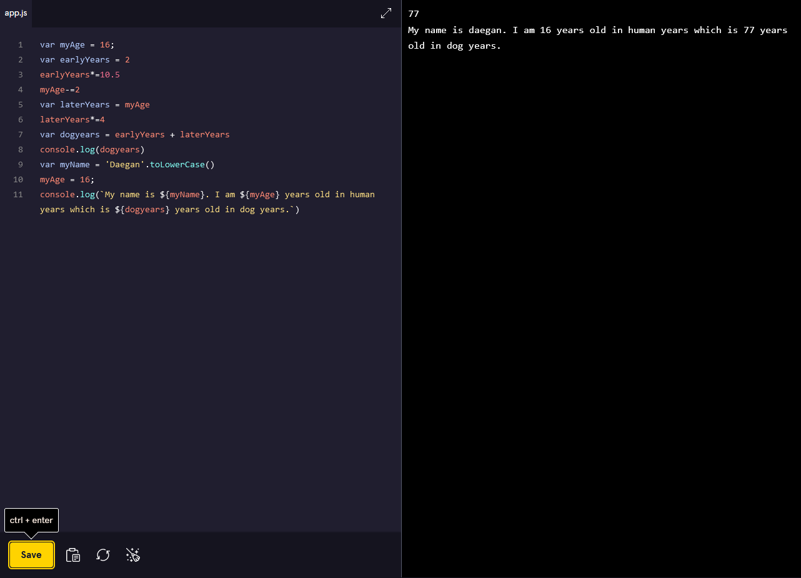
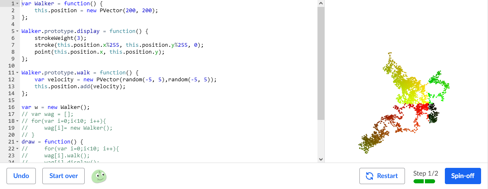
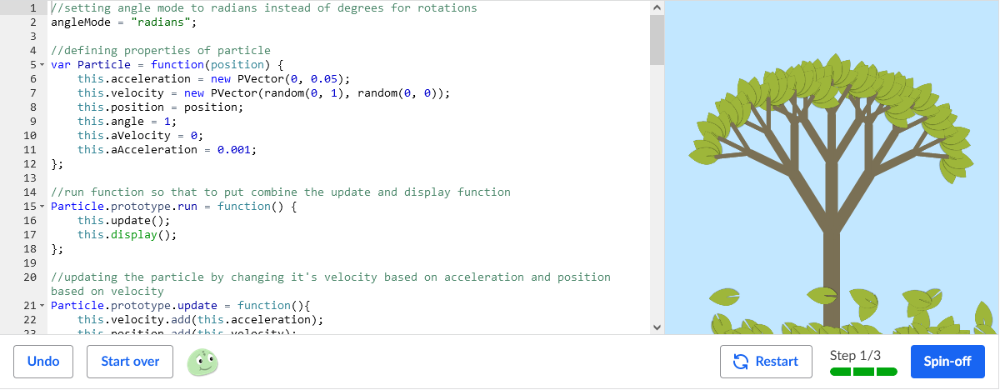
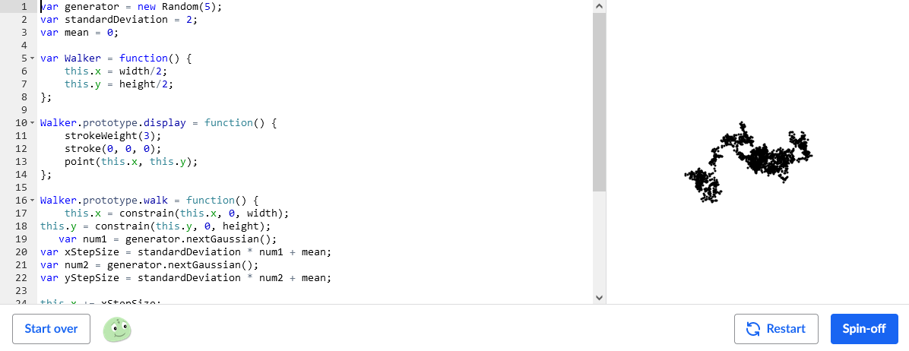
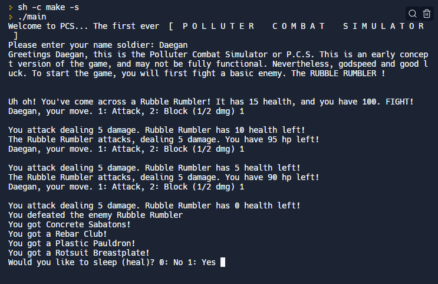

I can't not include this, learning the fundamentals of JavaScript was essential looking back. Simply put, I couldn't do a lot of the things I have done without these fundamentals. I will continue to build on this as I go by simply coding in JS. While
it may not seem like it has a large impact, without it I wouldn't be able to code in JS, a somewhat common language.

Vectors is another kind of basic but very important one. I used a lot of vectors, for example in my bezier coding challenge, my particle class was a vector. Same as the fundamentals, as I use it more I will build upon my knowledge of it. The impact it's had is obviously a large one, though more quiet, as it isn't quite nescessary basic knowledge, rather more quiet, very useful kowledge. 
Again, another basic but very important concept. Like vectors, it's more of a quiet impact, doing a lot but not being very obvious. An example of particles would be in my bezier curves, where the points were particles. This allowed them to move and bounce around, which added to the immersion, rather than just being a bezier curve. 
The algorithm course may not seem like it would make someone inherently better at coding, but I honestly believe it did in my case. I learned a lot about the mentality for coding, rather than the actual coding itself. However I believe both are important. I can't think of many ways to improve and learn more on this skill, but I'm sure I could later down the line. Not only this, it helped me with being able to help others, which is always a useful skill.
Clearly this is very useful, I'm using these skills to create this website! It's also just in general useful, and employs a lot of useful concepts. It broadens the scope of JS for you by showing you what you can do with JS on top of what you already knew. This makes it really easy to learn more about creating apps, and is useful in creating nice looking app.
While this isn't a module, rather a path on Codecademy, I believe it is worth mentioning. This and Back-End have a lot of overlap, so what I say here really applies to both. This path really pushed me further. By that, I mean I got stuck and confused so many times on this. Nearly every lesson required a lot of thinking, something I don't normally need, especially when using react. Furthermore, at the time I really dislike it, but looking back now, I have used a lot of things which I originally learned from it, and implemented it into my own code.
While I haven't used it much yet, I can tell how useful it will be in the future, which I believe merits attention and a place on my list. Firstly, having different types of randomness is really useful, and I can see situations where pseudo-randomness isn't going to cut it. Secondly, it's really easy to build upon in the future. Different types of randomness each have different ways they can expand. Simply, it's easy to use and learn about multiple different types of randomness, rather than one. 
This coding challenge was different from a lot of other things I've done. At first, you follow a tutorial by Coding Train. This teaches you the basics of what you need to know. However, the different, and frankly challenging, part is the creative refactors. You make these refactors to the original code, however it's much more difficult than this. You need to use your base knowledge on what you've built following the video, while also coming up with the refactors as well as implementing them. Still, this was a very fun project, and I really did enjoy it. I also enjoyed making other peoples challenges, which I will embed my versions at the bottom of the page. Thus, it breaks my top 3.
This module, in my opinion, was the most important hand down. The only reason it's not number 1 is because of how much I enjoyed making spot number 1. I used what I learned here in literally every project, challenge, and presentation I did. Managing what was needed to be done, version control, a place to store code if I forget to save in p5 (speaking from experience) etc. Again, only reason it is not higher is due to the personal enjoyment reasons. However, I believe it had a huge impact, and has a lot of room to be improved upon as well.
This is it, my number one module. Honestly, this taught me a lot about mentality of coding. It taught me a lot about problem solving, and how to think outside of just the bit of code that isn't working. It taught me that sometimes with computers, things just aren't always going to work out the way you wnated, as seen by one of my files completely corrupting. More importantly though, it was fun. Incredibly fun. Working with one of my friends to create anything we wanted was a blast. It was simple enough I didn't feel overwhlemed, but difficult enough to pose a challenge. I was, and still am, proud of what the finished product was. It also taught me that sometimes you need to go out of your comfort zone. While I didn't for this, it pushed me to use more JS rather than C++ for my coding. Nevertheless, this was my favourite module of the whole course. 